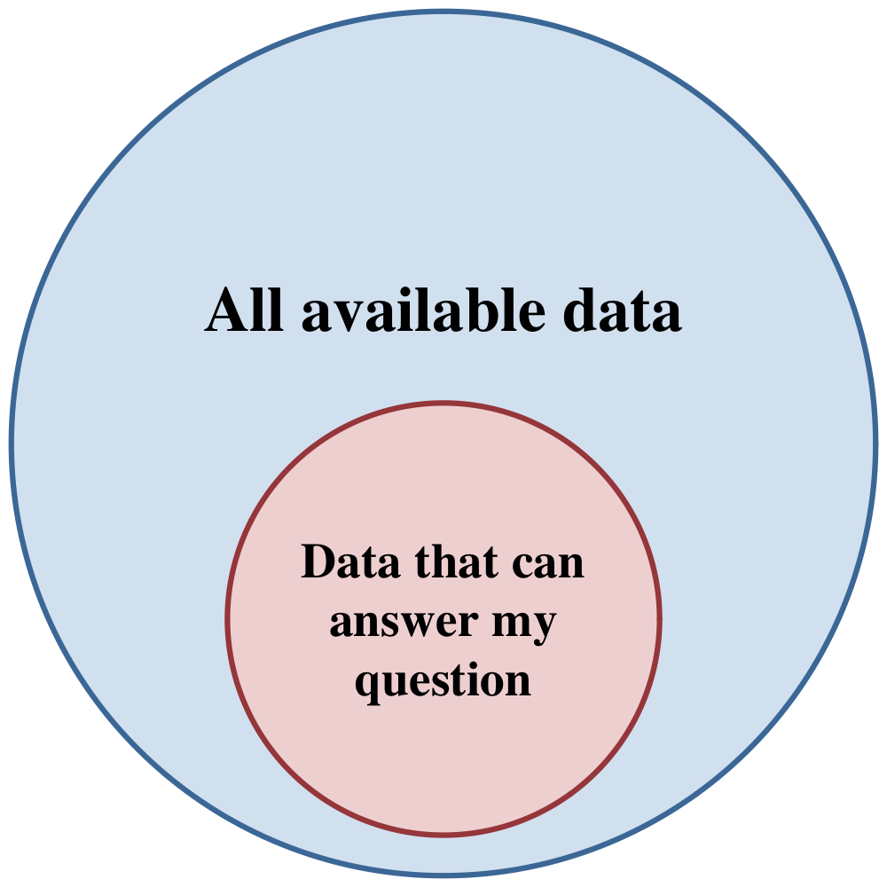
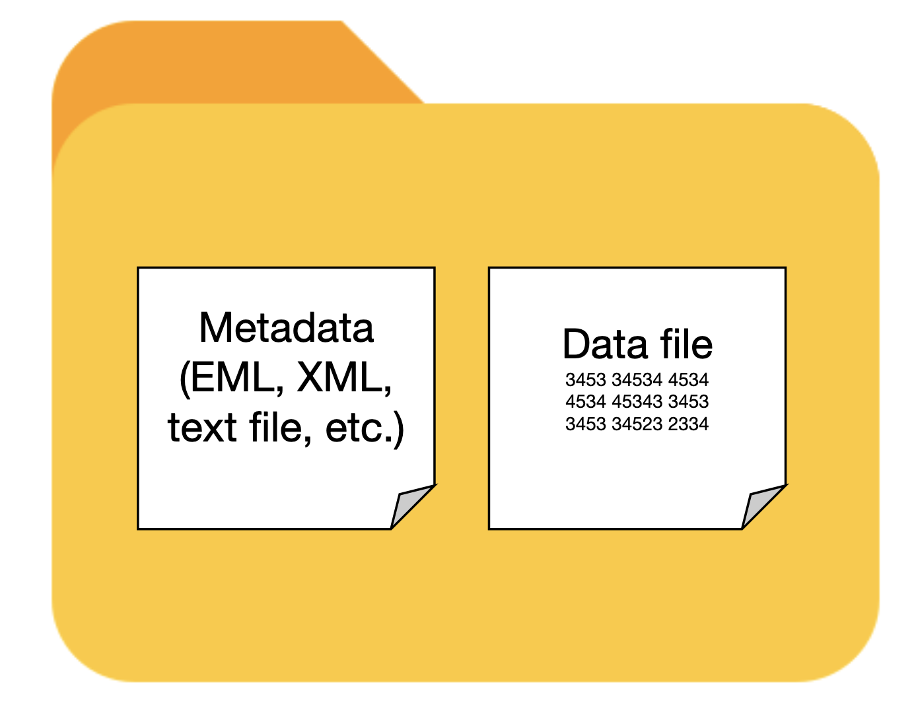
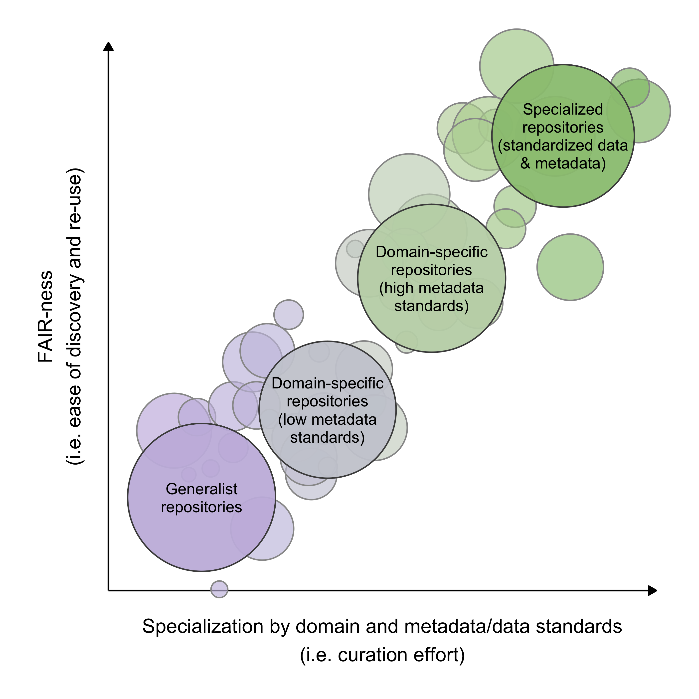
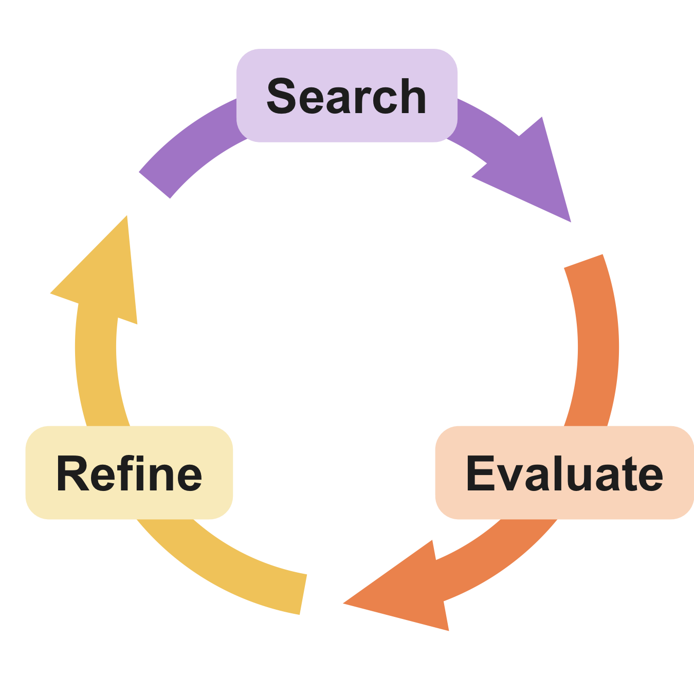

Search terms, repositories, and the search loop

Does species richness increase or decrease after disturbance?
Are forests or deserts more sensitive to vapor pressure deficit?
Is the latitudinal gradient in small mammal body size changing?
Map your research question to data search terms
Metadata tells you:
The essential unit is the dataset — data and metadata together.

Specialization affects how long you spend finding data and preparing it.

Adapted from Gries et al. 2023
R packages: dataone, EDIutils, nasadata, pangaear, dataRetrieval
R packages: amerifluxr, rgbif, rgee, rstac, move2, rentrez, neonUtilities, ausplotsR, robis
Be aware: it can be difficult to separate the wheat from the chaff.
Aggregators index metadata from many repositories and link out to the source.

Start simple → evaluate → refine → search again.
You may go around several times.
Authors use heterogeneous terms; curators don’t always standardize them.
| Operator | Does | Example |
|---|---|---|
"" |
exact phrase | "reef biodiversity" |
* |
wildcard placeholder | Pinus * data |
OR \| |
either term — broadens | "prairie pollinator" OR "grassland pollinator" |
AND & + |
both terms — narrows | bat + cactus |
NOT - ! |
exclude a term | marine biodiversity data -fishery |
Most interfaces expose indexed metadata fields as operators.
| Operator | Does | Example |
|---|---|---|
site: |
search one domain | site:.gov bird data |
filetype: |
specific file extension | filetype:tif precipitation data |
intitle: |
word in the title | intitle:"lithology" |
inurl: |
word in the URL | inurl:data soil chemistry |
Useful for long, repetitive metadata extraction and filtering — with guidelines:
GenAI writes API search scripts well — but ask whether you want to learn it yourself, and whether the code will overburden the API.
Document as you go:
Little data found isn’t the end of the project. It may mean a truly novel question, or a real gap in the research community.
The focus can shift toward: